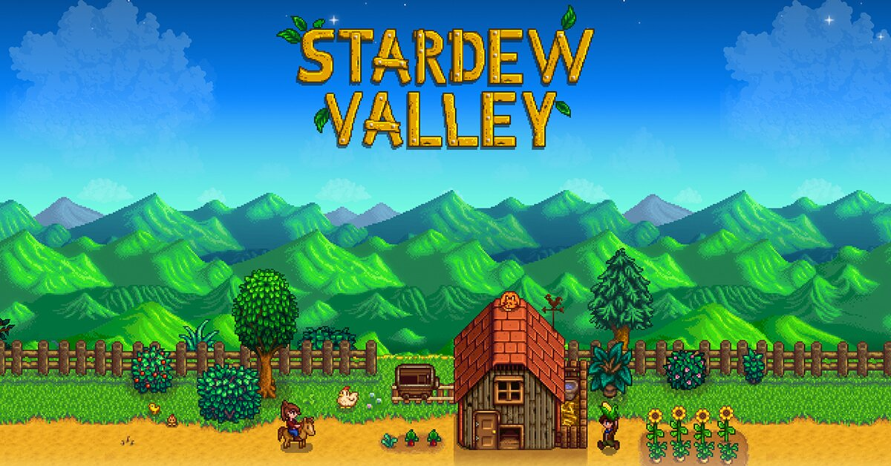
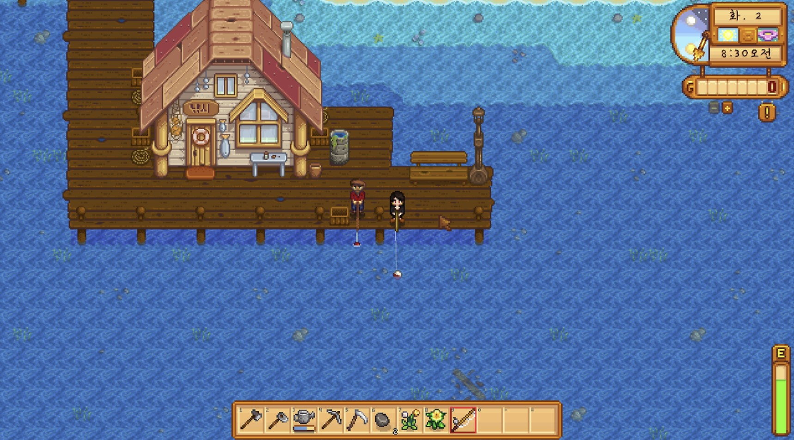
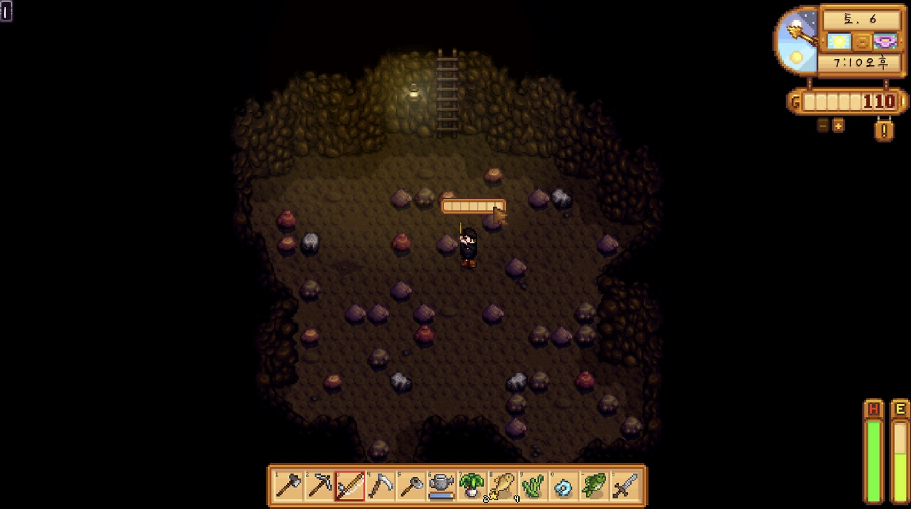
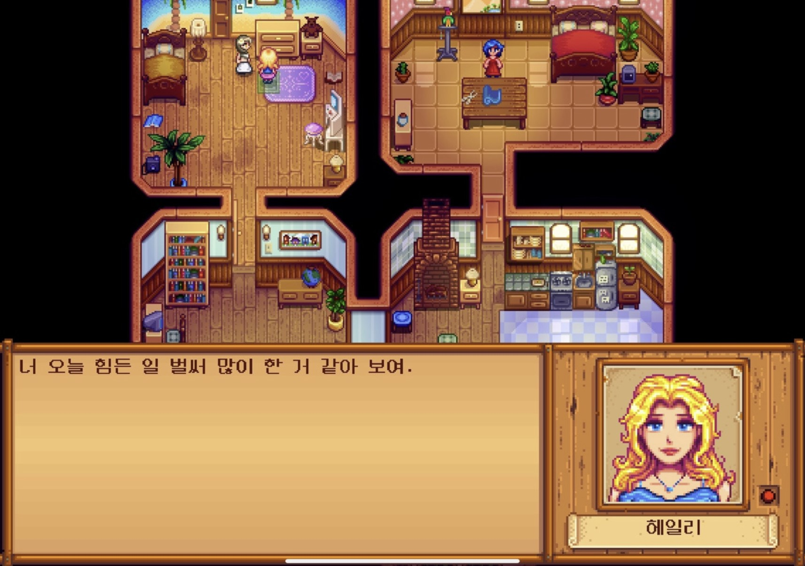
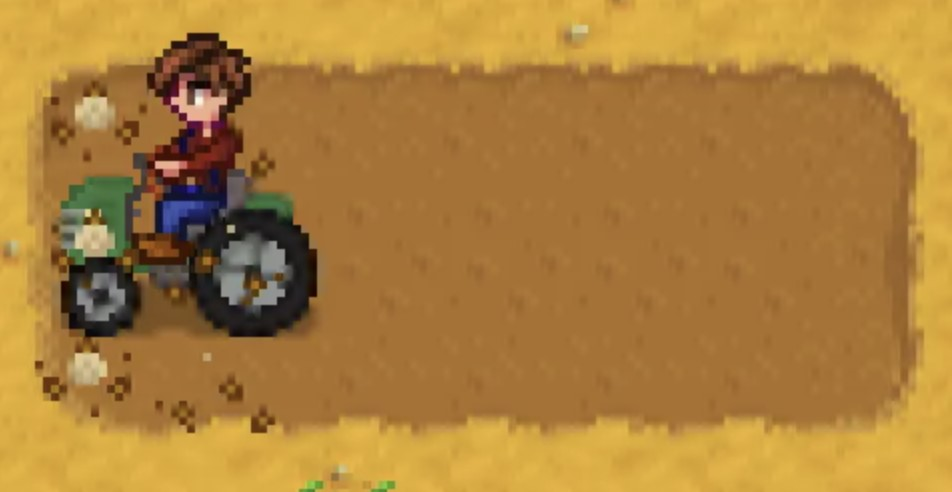
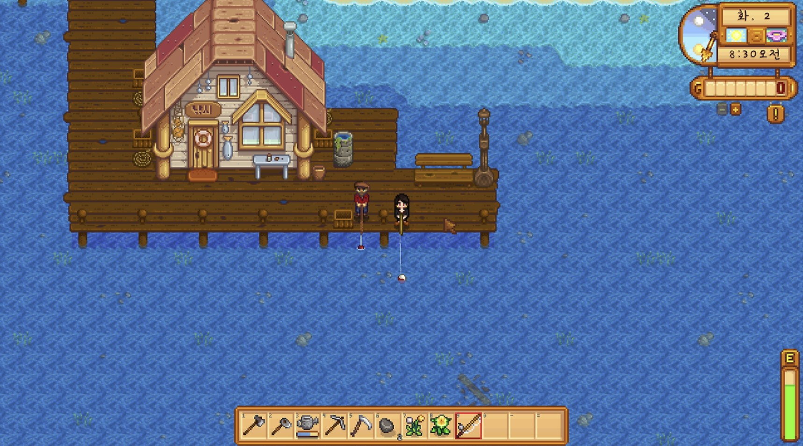
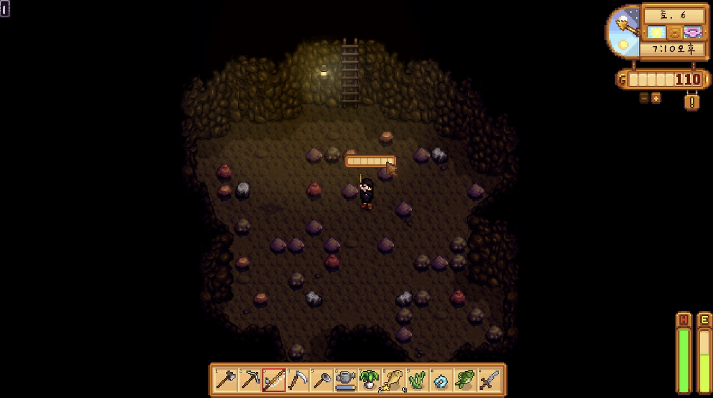
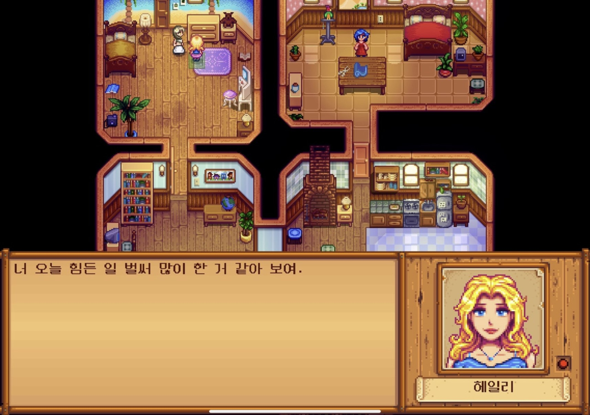
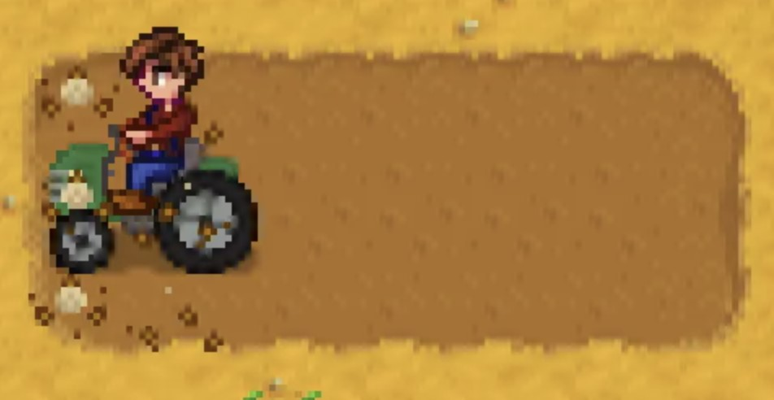

스타듀밸리

출시일 : 2016년 2월 27일
장르 : 인디 게임, 롤 플레잉, 인생 시뮬레이션, 건설 경영 시뮬레이션
가격 : 16,000원
당신은 스타듀 밸리에 있는 할아버지의 오래된 농장 부지를 물려받았습니다. 손으로 물려받은 도구와 동전 몇 개로 무장한 당신은 새로운 삶을 시작하기 시작합니다. 이 땅에서 살면서 무성하게 자란 들판을 번창하는 집으로 바꾸는 법을 배울 수 있을까요?

기준일:
2024-12-21 |
|
|---|---|
| 메타스코어 89/100 | 유저 평점 8.8/10 |

기준일:
2024-12-21 |
|
|---|---|
| 종합 평가 | 최근 평가 |
| 압도적으로
긍정적(98%) (평가 705,934개) |
압도적으로
긍정적(99%) (평가 41,442개) |
1. 힐링과 몰입감있는 게임 플레이
 
농장 경영, 낚시, 채광 등 다양한 활동을 통해 평화롭고 여유로운 분위기를 제공한다. 게임 내 배경음악과 그래픽 또한 따뜻한 감성을 자극해 스트레스 해소에 도움을 준다.
2. 자유도 높은 게임 진행 방식
플레이어는 자신의 속도에 맞게 농사를 짓거나, 마을 주민과의 관계를 발전시키는 등 원하는 대로 목표를 설정할 수 있다. 정해진 루트 없이 자신만의 이야기를 만들어가는 재미가 았어 다양한 플레이 스타일을 지원한다.
3. 캐릭터와 마을 커뮤니티의 매력
 스타듀밸리의 마을 주민들은 각각 개성있는 스토리와 성격을 가지고 있어 그들과의 상호작용이 게임의 큰 즐거움 중 하나이다. 선물과 대화를 통해 관계를 쌓고 이벤트를 경험하며 마치 실제 커뮤니티 일원이 된 듯한 몰입감을 제공한다. 이 과정에서 감동적인 스토리도 발견할 숫 있어 감성적인 연결도 느껴진다.
4. 풍부한 컨텐츠와 업데이트

단순히 농사를 짓는 것에서 끝나지 않고, 몬스터와 싸운는 던전탐험, 희귀 아이템 수집, 축제 참여 등 다양한 컨텐츠를 제공한다. 또한 개발자가 꾸준히 업데이트를 제공하며 새로운 기능과 이야기를 추가해 게임을 더 풍성하게 만든다.
 
농장 경영, 낚시, 채광 등 다양한 활동을 통해 평화롭고 여유로운 분위기를 제공한다. 게임 내 배경음악과 그래픽 또한 따뜻한 감성을 자극해 스트레스 해소에 도움을 준다.
2. 자유도 높은 게임 진행 방식
플레이어는 자신의 속도에 맞게 농사를 짓거나, 마을 주민과의 관계를 발전시키는 등 원하는 대로 목표를 설정할 수 있다. 정해진 루트 없이 자신만의 이야기를 만들어가는 재미가 았어 다양한 플레이 스타일을 지원한다.
3. 캐릭터와 마을 커뮤니티의 매력
 스타듀밸리의 마을 주민들은 각각 개성있는 스토리와 성격을 가지고 있어 그들과의 상호작용이 게임의 큰 즐거움 중 하나이다. 선물과 대화를 통해 관계를 쌓고 이벤트를 경험하며 마치 실제 커뮤니티 일원이 된 듯한 몰입감을 제공한다. 이 과정에서 감동적인 스토리도 발견할 숫 있어 감성적인 연결도 느껴진다.
4. 풍부한 컨텐츠와 업데이트

단순히 농사를 짓는 것에서 끝나지 않고, 몬스터와 싸운는 던전탐험, 희귀 아이템 수집, 축제 참여 등 다양한 컨텐츠를 제공한다. 또한 개발자가 꾸준히 업데이트를 제공하며 새로운 기능과 이야기를 추가해 게임을 더 풍성하게 만든다.